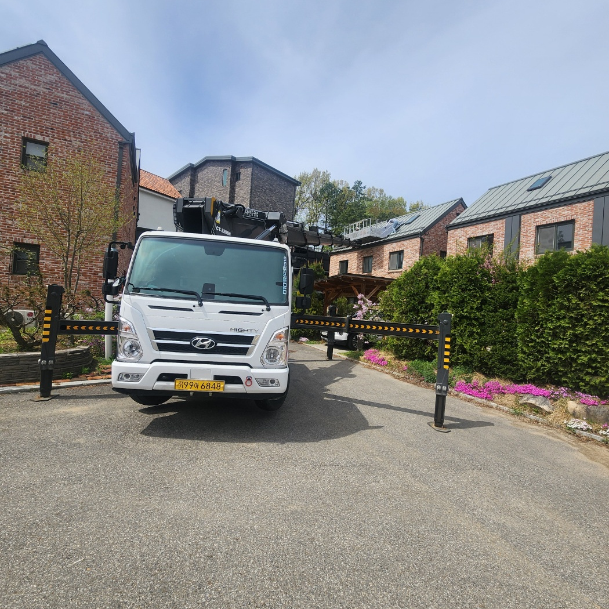
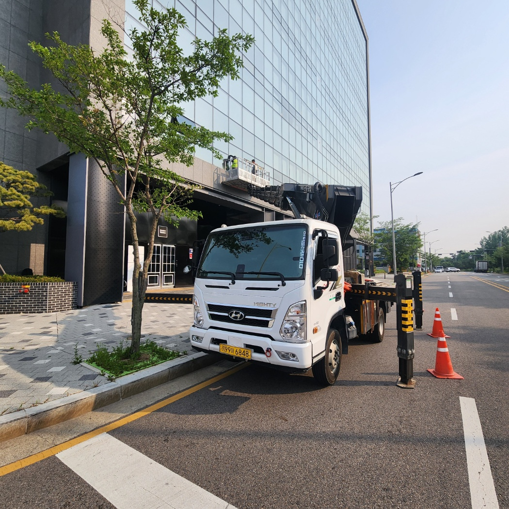

전북 스카이차 비용, 현장 사진은 어떻게 찍어야 할까

비용
01전북 스카이차 비용
전북 스카이차 비용은 현장 한 장의 사진으로 견적 편차가 크게 줄어듭니다. 도로 폭과 장애물, 건물 외벽까지의 거리, 가시거리 등이 한눈에 보여야 작업 가능한 차량 종류가 결정됩니다. 비용은 단정 짓기보다 현장 변수에 맞춰 달라질 수 있다고 보시는 편이 좋습니다.
전북 지역은 도심부와 농어촌 지역의 작업 환경이 크게 달라, 사진 한 장의 정보가 견적 정확도에 미치는 영향이 큽니다.
02전북 스카이차 선택
전북에서 스카이차를 선택할 때는 작업 높이와 진입 가능 여부를 먼저 확인하는 편이 좋습니다.
확인할 점
- 작업 지점까지의 실제 높이
- 접근로의 폭과 회전 반경
- 전선·간판·가로수 등 상부 장애물
- 작업 가능 시간대 (소음 민원 가능성)

한 장
03전북 현장 체크
전북 현장 체크는 사진 3장이면 충분한 편입니다. 멀리서 한 장, 가까이서 한 장, 작업 지점을 올려다본 한 장입니다.
체크리스트
- 도로에서 건물 외벽까지의 거리
- 1층 입구·주차장 진입 가능 여부
- 상부 전선이나 간판 위치
- 인접 건물과의 간격
- 주변 차량 통행량 (도로 점유 협의 필요 여부)
04진행 절차
현장 사진 확인 후 견적, 작업일 협의, 차량 배차, 현장 도착, 안전 점검 순으로 진행됩니다.
작업 흐름
- 전화 또는 카페로 현장 사진 전송
- 현장 변수 반영한 견적 제시
- 작업 일정과 시간 확정
- 차량 배차 및 안전 장구 점검
- 현장 도착 후 1차 안전 점검 → 작업 진행
05비용 기준
비용은 차량 종류, 작업 높이, 현장 변수에 따라 달라질 수 있습니다.
비용 결정 요소
- 스카이차 종류 (작업 가능 높이)
- 작업 시간 (반나절·하루)
- 현장 접근 난이도
- 야간·주말 여부
- 도로 점유 협의 필요 여부
06주의할 점
작업 전 안전 점검을 충분히 진행하는 편이 좋습니다. 특히 상부 전선과 상호 통신은 사고 예방에 핵심입니다.
실수 줄이기
- 작업자 안전 장구 사전 점검
- 주변 통행 차단·표지판 설치
- 상부 장애물 거리 측정
- 비상시 하강 절차 사전 공유
- 날씨(강풍·강우) 작업 가능 여부 확인
07상담 팁
전화 상담 시 작업 지점 사진 3장과 작업 내용(외벽 청소·간판 설치·전기 작업 등)을 미리 알려주시면 정확한 답변이 빠릅니다. 사진은 카페 게시판이나 메시지로 전송할 수 있습니다.
08자주 묻는 질문
Q. 전북 어느 지역까지 출장 가능한가요?
전주·익산·군산·정읍 등 전북 전 지역 출장이 가능한 편입니다. 정확한 일정은 사전 협의로 결정됩니다.
Q. 견적은 사진만 보내도 가능한가요?
현장 사진 3장 정도면 1차 견적이 가능한 편입니다. 다만 현장 변수에 따라 조정될 수 있습니다.
Q. 야간·주말 작업도 되나요?
사전 협의로 가능하며, 시간대에 따라 비용이 달라질 수 있습니다.
Q. 협소 골목도 작업 가능한가요?
차량 종류에 따라 다르며, 사진으로 골목 폭과 회전 반경 확인이 필요한 편입니다.
09서비스 지역
전북 인근 지역도 출장 상담 가능합니다.